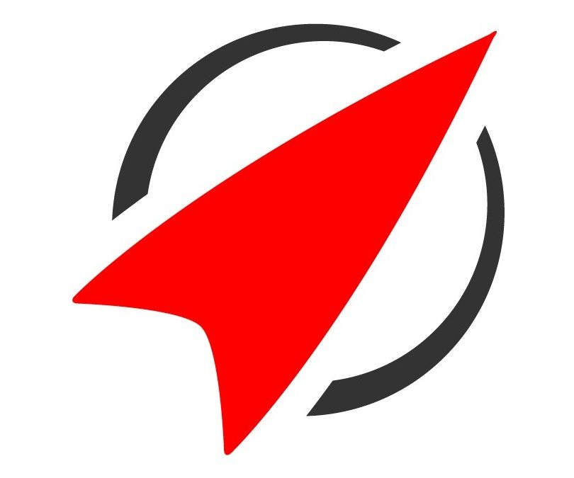

Experiences
-

Data Analyst
EDF
4 months internship, Lyon
- Management and improvement of a world nuclear power plants database
- Development of a custom ETL using Python webscraping and data pipelines
- Creation of PowerBI dashboards empowering data to facilitate Direction's decision making
-

Data Consultant
SII — Thales
6 months internship, Lille
- Translation of cross-functional business needs into KPIs (HR, finance, project management)
- ETL creation with SQL, Dataiku and Python
- Creation of PowerBI dashboards according to business requirements
- Project management using Agile/SCRUM methodology -

Entrepreneur in Residence
Rocket Internet China
4 months internship, online
- Translation of e-commerce business needs into KPIs, variables and scripts
- Research and analysis of star products and suitable suppliers
- Webscraping using Scrapy and Selenium
- Process automation with VPS, AWS RDS, Lambda, EC2 & S3
- Decision-making under uncertainty (SCRUM methodology) -
Member of the Professional Relationships department
IÉSEG Finance
4 months associative experience, Lille
- Canvassing new partners/sponsors for the IÉSEG Finance student association.
- Creation and organization of events in collaboration with our partners: company visits, trading competitions, conferences, trip to London... -
CSR Consultant
ALDI Nord
4 months project, Lille
Creative and strategic innovations in communications and responsible consumption -
Sales workforce
Capfun
3 months internship, Montblanc
Sales, supplier relations and customer needs analysis in a multicultural team -
Polyvalent worker
Walt Disney World
2 months job, Orlando
Multi-skilled fast-food worker in a multicultural team
My International Coverage